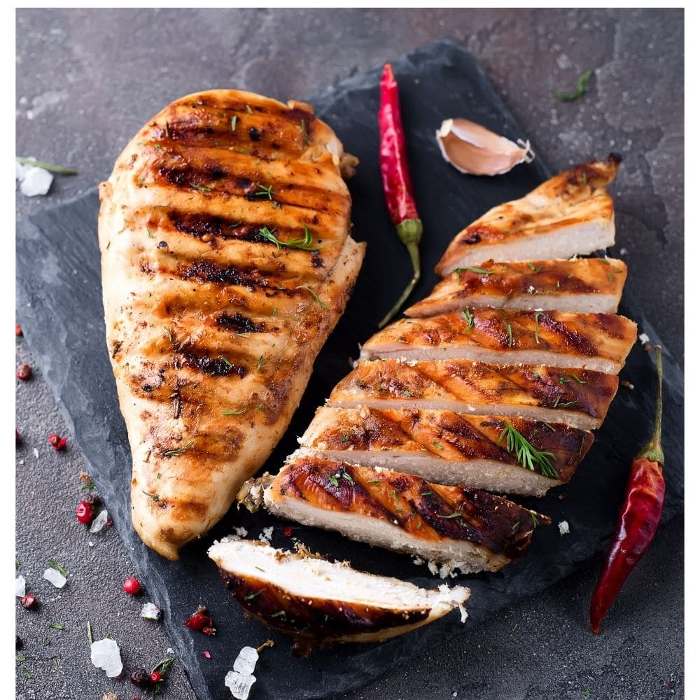
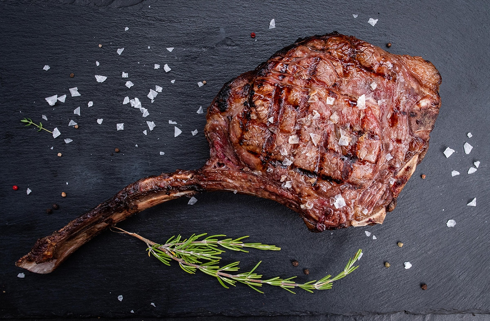
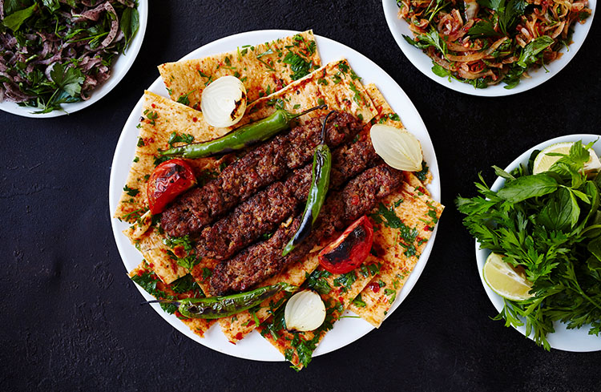

Hot grill
Chicken steak
"Indulge in the perfect sizzle of our grilled steak, cooked to juicy perfection and bursting with flavor.
Our high-quality cuts, expertly seasoned and seared, will leave your taste buds craving for more.
American Grill
Tomahawk Steak
Indulge in our juicy, flavor-packed tomahawk steak, served with all the trimmings for the ultimate carnivorous experience.
Sink your teeth into our perfectly grilled tomahawk steak, a show-stopping centerpiece that's sure to impress any meat lover.
Spicy Kebabs
Turkish Kebabs
Turkish kebabs are a delicious and popular dish made with marinated meat grilled to perfection.
Served with fresh vegetables, aromatic spices, and savory sauces, they're a mouth-watering treat for any lover of Mediterranean cuisine.